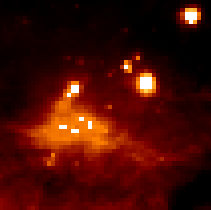
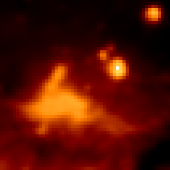

Convolution and filtering (astropy.convolution)¶
Introduction¶
astropy.convolution provides convolution functions and kernels that offers
improvements compared to the scipy scipy.ndimage convolution routines,
including:
- Proper treatment of NaN values
- A single function for 1-D, 2-D, and 3-D convolution
- Improved options for the treatment of edges
- Both direct and Fast Fourier Transform (FFT) versions
- Built-in kernels that are commonly used in Astronomy
The following thumbnails show the difference between Scipy’s and Astropy’s convolve functions on an Astronomical image that contains NaN values. Scipy’s function essentially returns NaN for all pixels that are within a kernel of any NaN value, which is often not the desired result.
| Original | Scipy convolve |
Astropy convolve |
|  |  |
 |
The following sections describe how to make use of the convolution functions, and how to use built-in convolution kernels:
Getting started¶
Two convolution functions are provided. They are imported as:
from astropy.convolution import convolve, convolve_fft
and are both used as:
result = convolve(image, kernel)
result = convolve_fft(image, kernel)
convolve() is implemented as a
direct convolution algorithm, while
convolve_fft() uses a fast Fourier
transform (FFT). Thus, the former is better for small kernels, while the latter
is much more efficient for larger kernels.
For example, to convolve a 1-d dataset with a user-specified kernel, you can do:
>>> from astropy.convolution import convolve
>>> convolve([1, 4, 5, 6, 5, 7, 8], [0.2, 0.6, 0.2])
array([ 1.4, 3.6, 5. , 5.6, 5.6, 6.8, 6.2])
Notice that the end points are set to zero - by default, points that are too
close to the boundary to have a convolved value calculated are set to zero.
However, the convolve() function allows for a
boundary argument that can be used to specify alternate behaviors. For
example, setting boundary='extend' causes values near the edges to be
computed, assuming the original data is simply extended using a constant
extrapolation beyond the boundary:
>>> from astropy.convolution import convolve
>>> convolve([1, 4, 5, 6, 5, 7, 8], [0.2, 0.6, 0.2], boundary='extend')
array([ 1.6, 3.6, 5. , 5.6, 5.6, 6.8, 7.8])
The values at the end are computed assuming that any value below the first
point is 1, and any value above the last point is 8. For a more
detailed discussion of boundary treatment, see Using the convolution functions.
This module also includes built-in kernels that can be imported as e.g.:
>>> from astropy.convolution import Gaussian1DKernel
To use a kernel, first create a specific instance of the kernel:
>>> gauss = Gaussian1DKernel(stddev=2)
gauss is not an array, but a kernel object. The underlying array can be retrieved with:
>>> gauss.array
array([ 6.69151129e-05, 4.36341348e-04, 2.21592421e-03,
8.76415025e-03, 2.69954833e-02, 6.47587978e-02,
1.20985362e-01, 1.76032663e-01, 1.99471140e-01,
1.76032663e-01, 1.20985362e-01, 6.47587978e-02,
2.69954833e-02, 8.76415025e-03, 2.21592421e-03,
4.36341348e-04, 6.69151129e-05])
The kernel can then be used directly when calling
convolve():
import numpy as np
import matplotlib.pyplot as plt
from astropy.convolution import Gaussian1DKernel, convolve
# Generate fake data
x = np.arange(1000).astype(float)
y = np.sin(x / 100.) + np.random.normal(0., 1., x.shape)
# Create kernel
g = Gaussian1DKernel(stddev=50)
# Convolve data
z = convolve(y, g, boundary='extend')
# Plot data before and after convolution
plt.plot(x, y, 'k.')
plt.plot(x, z)
plt.show()
(Source code, png, hires.png, pdf)
{kind=link}
{kind=link}
Using astropy.convolution¶
Reference/API¶
astropy.convolution Package¶
Functions¶
convolve(array, kernel[, boundary, ...]) |
Convolve an array with a kernel. |
convolve_fft(array, kernel[, boundary, ...]) |
Convolve an ndarray with an nd-kernel. |
discretize_model(model, x_range[, y_range, ...]) |
Function to evaluate analytical model functions on a grid. |
kernel_arithmetics(kernel, value, operation) |
Add, subtract or multiply two kernels. |
Classes¶
AiryDisk2DKernel(radius, **kwargs) |
2D Airy disk kernel. |
Box1DKernel(width, **kwargs) |
1D Box filter kernel. |
Box2DKernel(width, **kwargs) |
2D Box filter kernel. |
CustomKernel(array) |
Create filter kernel from list or array. |
Gaussian1DKernel(stddev, **kwargs) |
1D Gaussian filter kernel. |
Gaussian2DKernel(stddev, **kwargs) |
2D Gaussian filter kernel. |
Kernel(array) |
Convolution kernel base class. |
Kernel1D([model, x_size, array]) |
Base class for 1D filter kernels. |
Kernel2D([model, x_size, y_size, array]) |
Base class for 2D filter kernels. |
MexicanHat1DKernel(width, **kwargs) |
1D Mexican hat filter kernel. |
MexicanHat2DKernel(width, **kwargs) |
2D Mexican hat filter kernel. |
Model1DKernel(model, **kwargs) |
Create kernel from 1D model. |
Model2DKernel(model, **kwargs) |
Create kernel from 2D model. |
Moffat2DKernel(gamma, alpha, **kwargs) |
2D Moffat kernel. |
Ring2DKernel(radius_in, width, **kwargs) |
2D Ring filter kernel. |
Tophat2DKernel(radius, **kwargs) |
2D Tophat filter kernel. |
Trapezoid1DKernel(width[, slope]) |
1D trapezoid kernel. |
TrapezoidDisk2DKernel(radius[, slope]) |
2D trapezoid kernel. |